End-to-end verification of the workshop package and self-guided web app: a brand-new
Agentforce scratch org, the package installed from the link, and the guide followed step by step —
Run Setup → install the agent → build & preview → log a rich Note.
Package installs on a fresh org — the new version installed cleanly into a brand-new Agentforce scratch org.
App tabs — Workshop Home · Agentforce Studio · Enhanced Notes all present (tab renamed as requested).
Run Setup — assigned all 4 permission sets; a clear "Setup Complete!" modal points to the next step.
Install the starter agent — one click deployed, published & activated Employee Agent V1 via the NGA API and granted access.
Agent appears in Agentforce Studio — Employee Agent V1, Version 1 (Active).
Preview / Live Test Mode — the agent summarized the meeting notes correctly.
Create Note action + Enhanced Notes viewer — a rich HTML note rendered faithfully and opened directly via ?id=.
Notes must be enabled once (UI only) — scratch/trial orgs need Setup → Notes Settings → Enable Notes; the guide now covers this.
Starter agent confirmation loop — the v1 instructions wait for a confirmation form before logging; the guide's richer instructions (Part A, step 5) resolve this.
1Workshop launchpad on a fresh org PASS
App Launcher → Employee Agent Workshop. The Home page shows the three-step launchpad and the new app tabs.
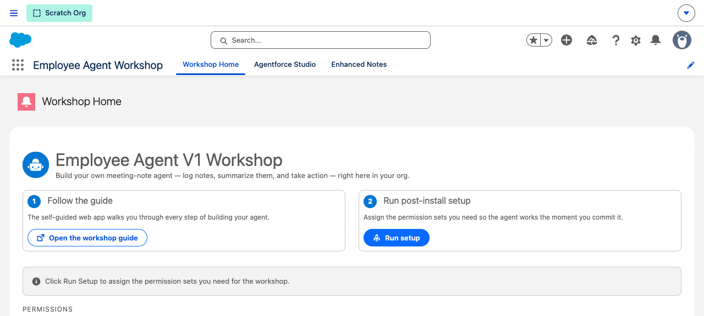
Workshop Home — note the new Agentforce Studio and Enhanced Notes tabs.
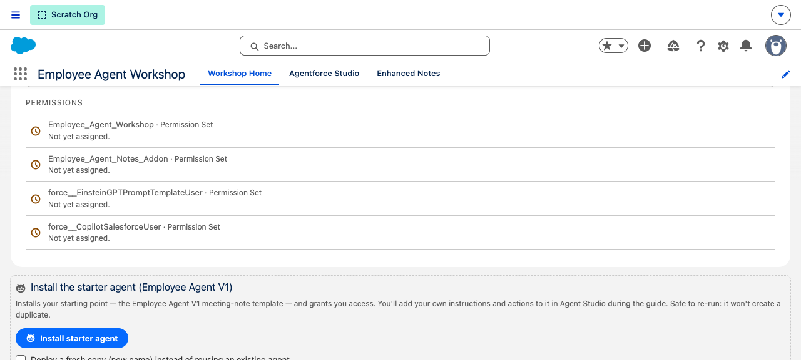
All four permission sets start "Not yet assigned"; the "Install the starter agent (Employee Agent V1)" card is a clear third step.
2Run post-install setup PASS
One click assigns the permission sets, then a modal guides the attendee to the next step.
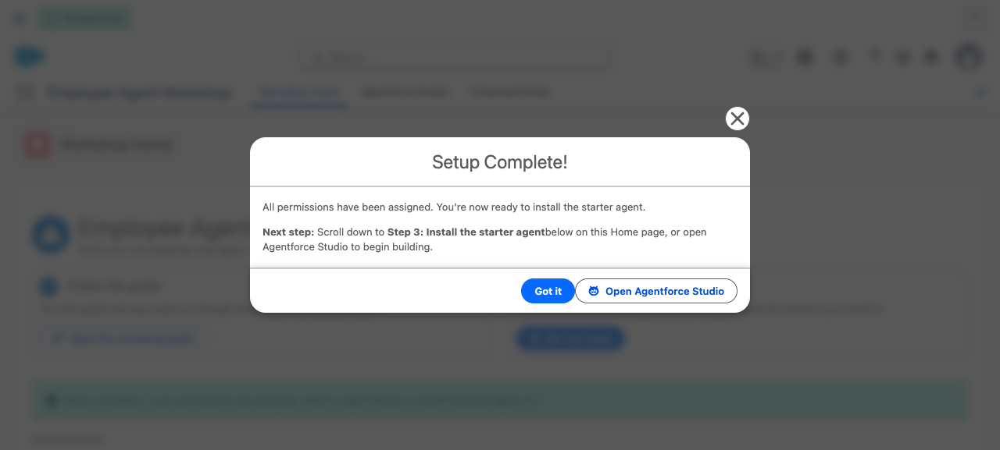
The "Setup Complete!" modal — points to Step 3 and offers "Open Agentforce Studio".
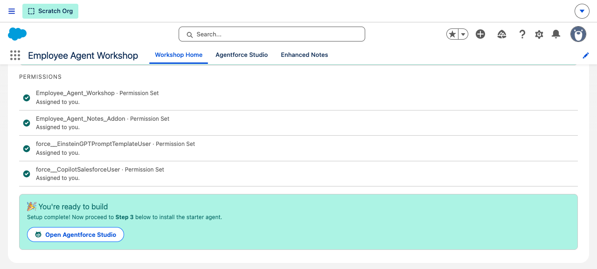
All four permission sets now show green "Assigned to you".
3Install the starter agent PASS
The launchpad deploys, publishes and activates the Agent Script agent at runtime (no CLI), then grants access.
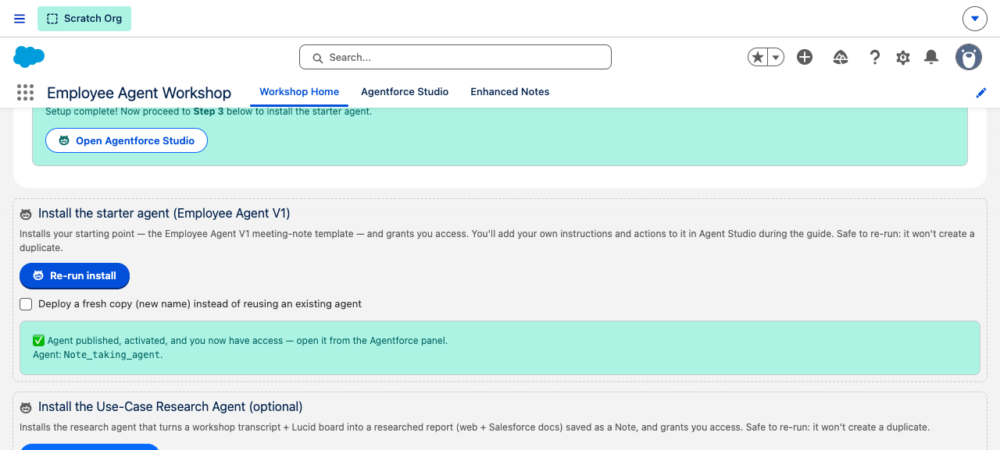
✅ "Agent published, activated, and you now have access." (Re-running is safe — it won't duplicate.)
4Agent appears in Agentforce Studio PASS
Opening the real Agentforce Studio app shows the agent in the list and the full builder.
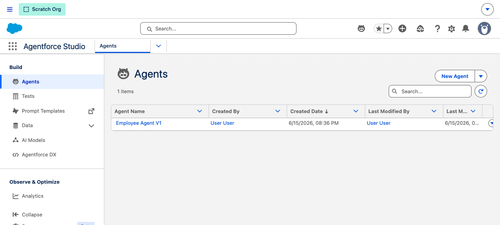
Employee Agent V1 in the Agents list.
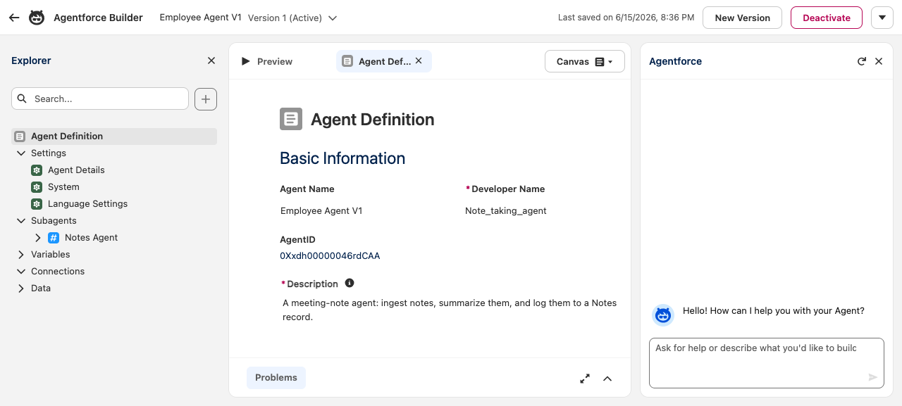
Agent Builder — Version 1 (Active), with the Notes Agent subagent.
Finding: The standard standard-AgentforceStudio tab embedded inside a custom app shows an
"Oops! Wrong spot" panel and a "Take Me There" button that opens the dedicated Agentforce Studio app. The tab is a
convenient shortcut, but Agents only render in their own app — worth a one-line note in the guide.
5Preview — Live Test Mode PASS
Talking to the agent in the centre panel; it summarized the meeting notes, with the reasoning trace on the right.
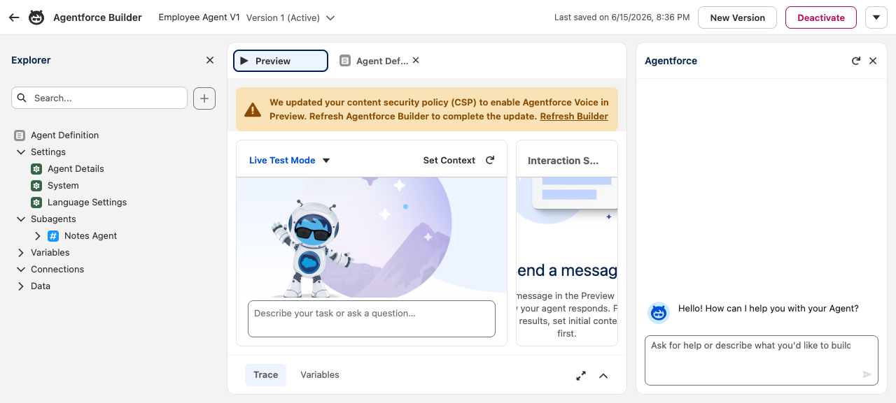
Live Test Mode open (centre panel).
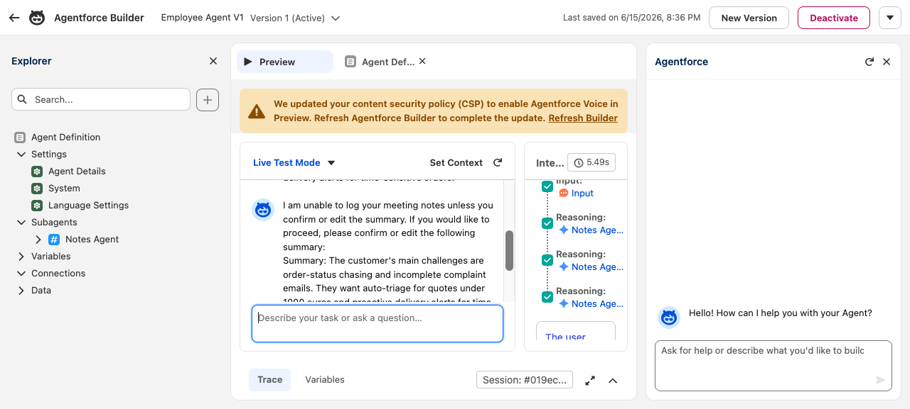
The agent's summary + the green reasoning trace in the Interaction Summary.
Finding: The v1 starter instructions ask the agent to wait for a confirmation form before logging, so a plain
"yes" loops. This is expected for the bare starter — Part A step 5 of the guide upgrades the instructions (richer HTML
summary + "create a standalone note, don't ask") which resolves it.
6Create Note action + Enhanced Notes viewer PASS
The Apex Create Note action returns a noteUrl; opening it lands directly on that note in the Enhanced
Notes viewer, with the rich inline-styled HTML rendered faithfully (the previous viewer stripped these styles).
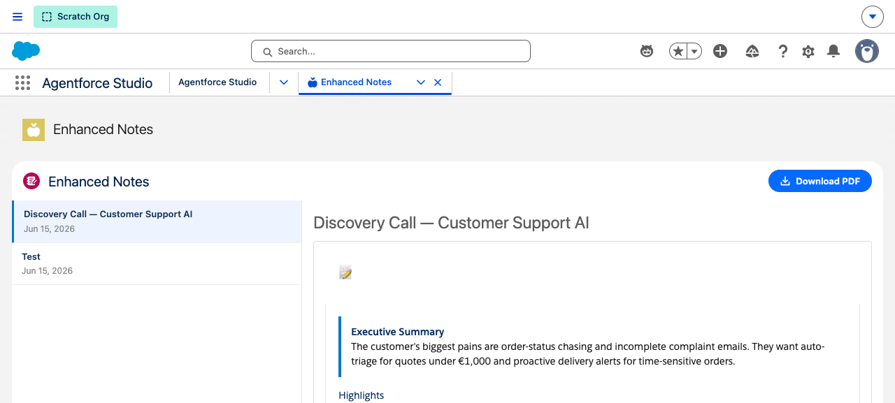
Enhanced Notes — opened straight to one note via ?id=…; the gradient header band and accent-bordered Executive Summary render correctly. Download PDF top-right.
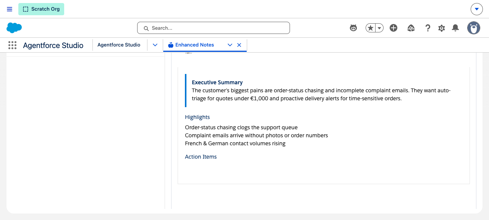
Executive Summary, Highlights and Action Items. (ContentNote's sanitizer drops list bullets and pill backgrounds — a known platform limit — but headings, the callout and structure survive.)
7Enabling Notes (the one manual step) 1 CLICK
Salesforce Notes can't be enabled by a package or API — it's a UI-only org preference. On a fresh scratch org the
Create Note action correctly reports a clean message until Notes is turned on.
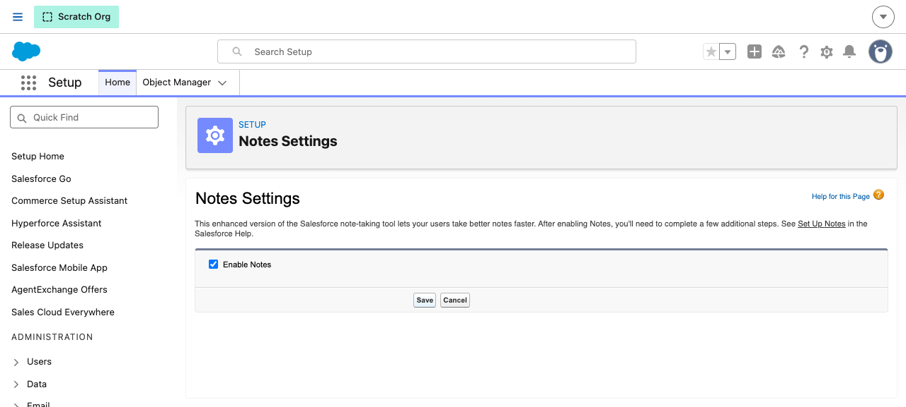
Setup → Notes Settings → Enable Notes → Save. After this, HtmlNoteService.isAvailable() returns true and notes are created. (Most real sandboxes already have this on.)
Verified via Apex: before — CONTENTNOTE_AVAILABLE=false, clean message returned (no crash);
after enabling — CONTENTNOTE_AVAILABLE=true, Note "…" created.
Blocked — a released version needs a validated build with coverage, but the
Einstein-dependent classes can't compile in a feature-less build org (hence the long-standing --skip-validation).
The beta version still installs everywhere.
Generated from an automated browser run · Agentforce Employee Agent Workshop · 15 June 2026